Transformar o simples ato de comer um biscoito em um momento especial.
Linha de
01
Amanteigado, macio e em formato de coração — o queridinho de quem prova pela primeira vez.
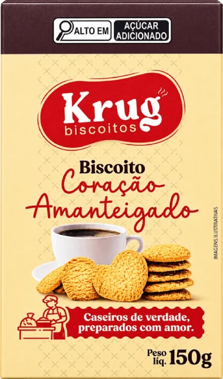
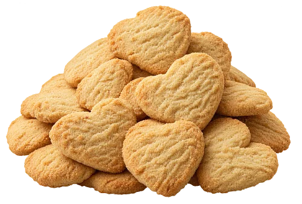
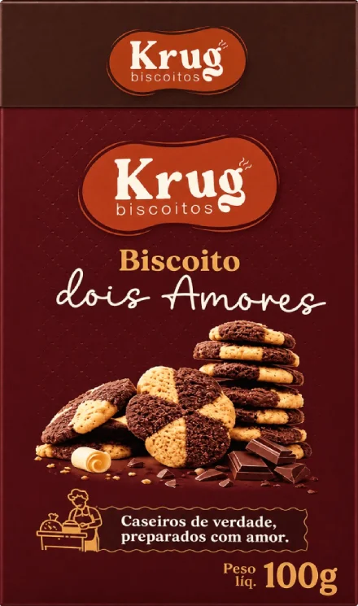
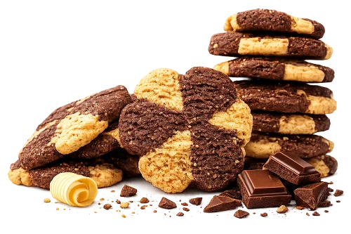
02
Dois sabores em um só biscoito, para quem não abre mão de escolher só um favorito.
03
Crocante e tostado, com aquele sabor de amendoim torrado na medida certa.
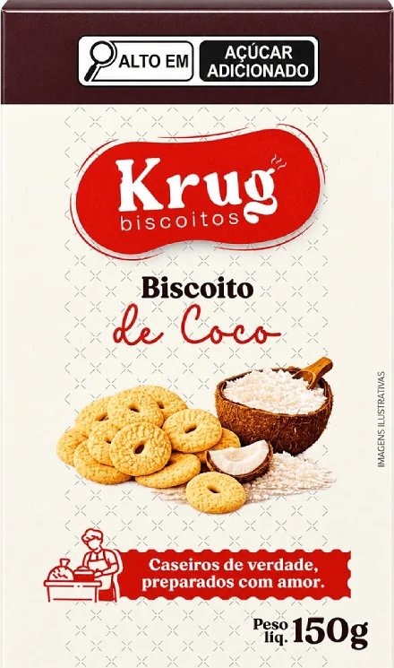
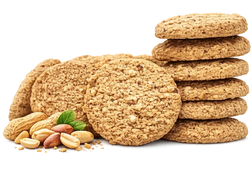
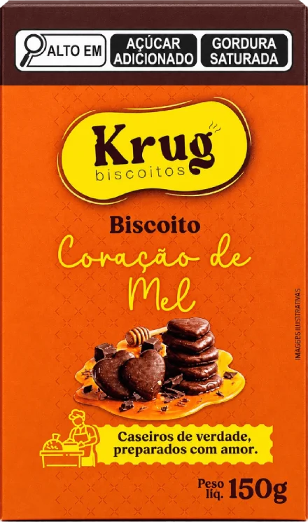
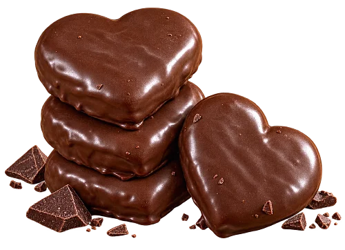
04
Formato de coração e doçura suave de mel, feito para presentear quem você ama.
05
Biscoito caseiro com coco ralado, lembrando aquele docinho feito na casa da vó.
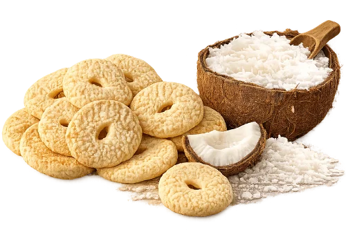
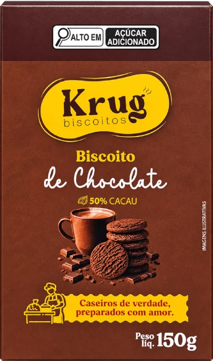
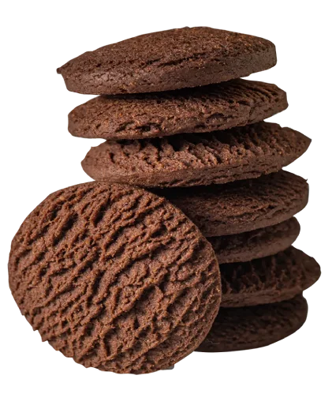
06
Massa amanteigada com chocolate de verdade, para quem não dispensa um clássico.
07
Sabor caseiro de milho, macio por dentro e levemente crocante por fora.
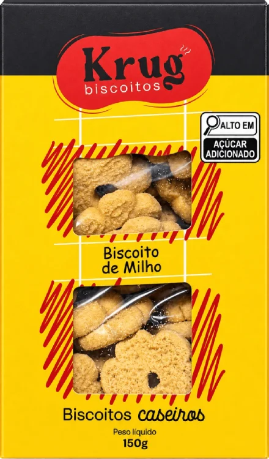
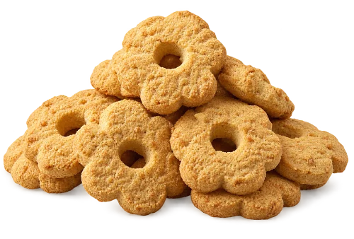
Linha de
08
Palito crocante com um blend de sete ervas, perfeito para petiscar em qualquer hora.
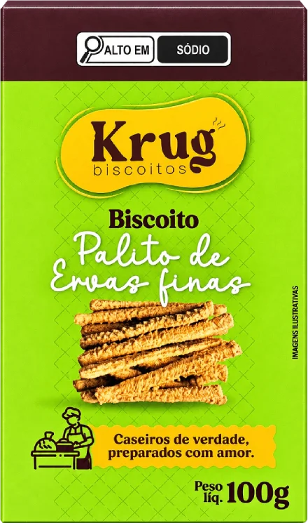
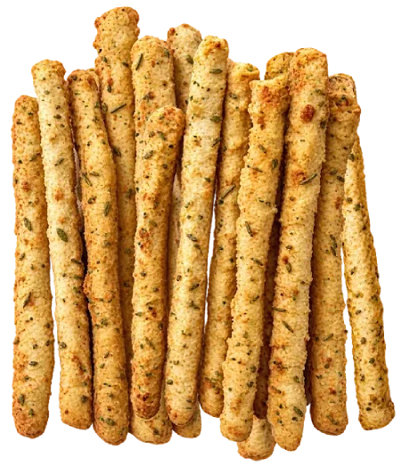
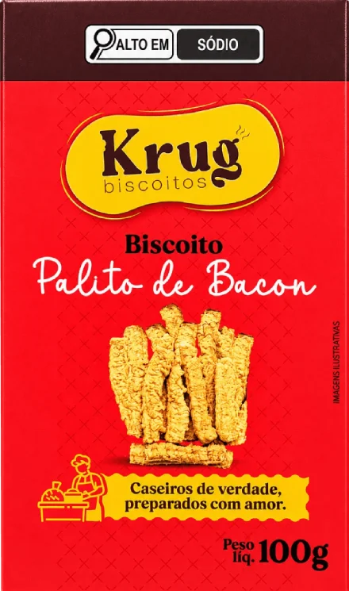
09
Sabor defumado e salgado, o queridinho de quem gosta de um lanche com mais personalidade.
10
Palito crocante com queijo parmesão, ótimo para acompanhar aquele café da tarde.
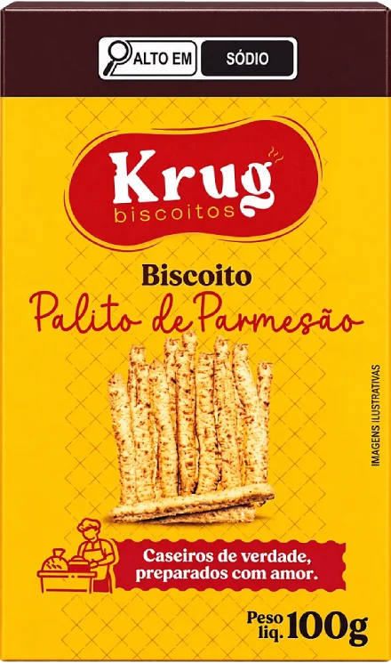
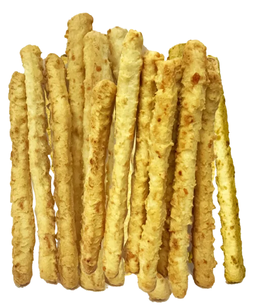